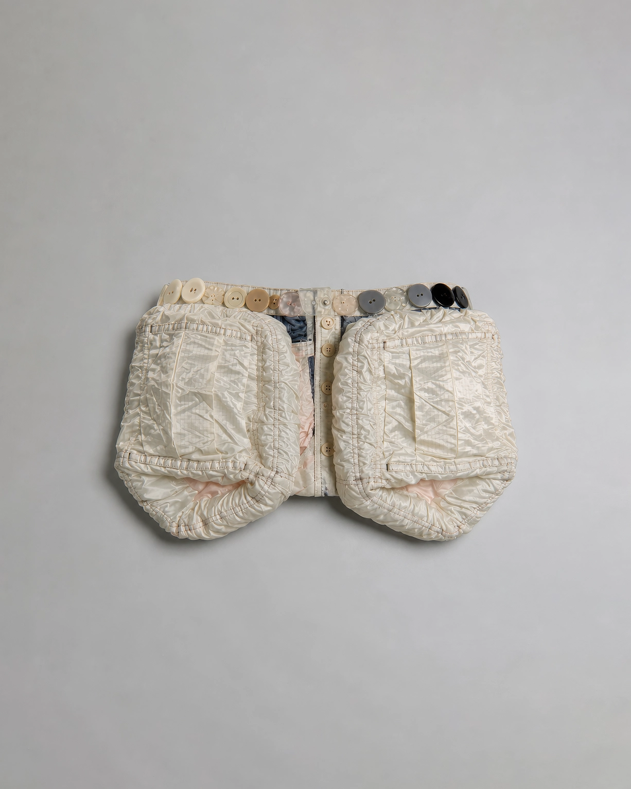

No.06 Variable Assistive Devices
Daily Supply Carrier, 2046
좁은 주거 환경에서 서랍장과 수납장을 줄이기 위해 제작된 착용형 생활 보급 장치이다. 사용자는 자주 사용하는 생활용품을 몸 주변에 수납한 채 생활하며 집 안의 수납 기능을 신체로 이동시킨다.
- 크기/무게
- W: 71, H: 22(cm) / 0.2(kg)
- 재질
- 나일론 원단, 폴리에스터 충전재, 플라스틱 단추, 면 안감
- 사용 목적
- 수납 공간 없이도 생활 필수품을 몸 가까이에 보관하기 위해 사용
- 유도 자세
-
팔을 몸 가까이에 둔 채 물건을 꺼내는 동작
작은 보폭으로 이동하는 자세
몸통 좌우 부피를 인식한 제한된 움직임 - 추정 환경
- 수납공간이 적은 환경
- 추정 사용
- 장치를 장시간 착용한 채 생활용품을 몸에 수납했던 것으로 추정된다. 자주 사용하는 물품은 바깥쪽 포켓에, 예비 물품은 안쪽 수납칸에 보관했던 것으로 보인다.
* 이미지에 마우스를 올려보세요.